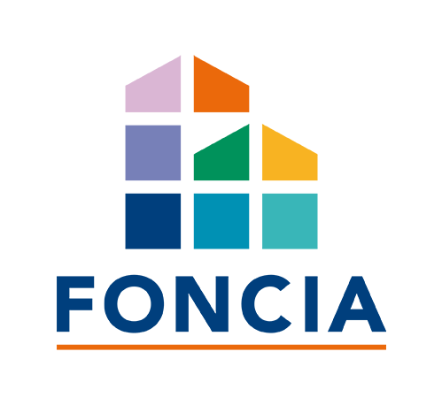
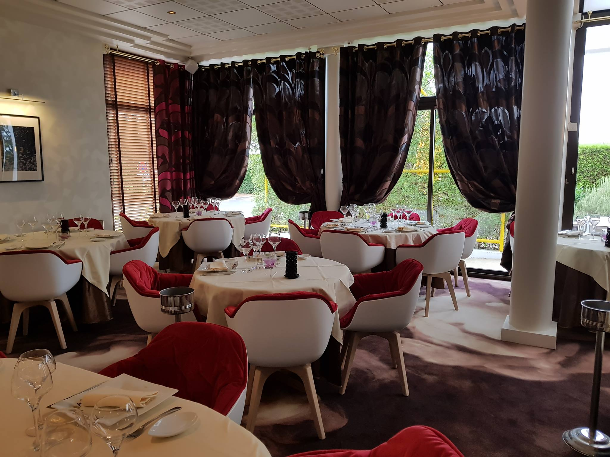

Quelques Informations sur Moi:
Je suis actuellement étudiant à l'IESEG en Master Digital Marketing et Innovation. Situé au coeur de la Défense, l'IESEG propose des cours tournés vers le marketing et les nouvelles technologies. Nous avons donc de nombreux cours en lien avec le digital tel que la formation aux codages Html et CSS proposée par Le Wagon.
Mon Poste Actuel:
Je suis actuellement Chargé de Projet Partenariat Apple chez Orange en apprentissage pendant 2ans. Arrivé au sein des locaux d'Arceuil en Septembre 2019, j'évolue au sein du département Orange Business Services. J'ai pour mission de gérer le "Business Excellence Program" qui vise notament la formation des commerciaux Orange BtoB aux nouvelles applications d'Apple. J'entretiens aussi la relation Orange Business Services-Apple de part les suivis réalisés sur plusieurs marchés. Enfin, je suis assistant chargé de projet "Smart Manager" qui propose une offre digitale packagée aux responsables du secteur de la restauration.
Mes Dernières Expériences:
ComfortClick - Manager e-Commerce WeightWorld - Londres - 6 mois
Stage de 6 mois à Londres en tant qu'Assistant Manager e-Commerce pour un distributeur en ligne d'articles de santé et de bien-être. J'ai pu travailler sur le référencement du site, sur la gestion des pages, manager les pages Amazon et créer en collaboration avec les équipes techniques un site internet optimisé pour l'affiliation moncomplement.fr/.
CoachStudent - StartUp Weekend
Au départ, ce n'était qu'une idée... c'est devenu un projet. Pendant la StartUp Week end de Tours 2018, j'ai développé un groupe de 6 personnes autour d'une idée personnelle: Coach Student. L'objectif est de créer un Chatbot (messagerie autonome sur les réseaux sociaux) qui aidera les étudiants dans toutes leurs démarches administratives: Rappel des dates, informations simples et rapide sur les services administratifs, proposition de bons plans,... Fini les heures de recherche à 2h du matin pour comprendre sa fiche d'imposition ou sa mutuelle étudiante, le petit cerveau Coach Bobby aidera de manière simple, amusante et rapide! En Bref? Coach Student est une boîte à outils digitale, le nouveaux couteaux suisse de l'étudiant.
Foncia - Négociateur Location Immobilière - Tours - 3 mois
J'ai réalisé un stage de fin de première année de Bachelor en immobilier afin d'évoluer dans un monde que je ne connaissais pas et aussi dans le but d'améliorer mon contact avec la clientèle. J'étais donc consultant immobilier dans le département location. Au début, je ne gérais que les visites. Par ma motivation et mes résultats, j'ai finalement eu mon propre bureau ou je pouvais accueillir mes clients et les accompagner dans leur recherche d'appartements. En 3 mois j'ai réalisé 132 visites avec 40 locations directes. Durant ce stage, j'ai pris en charge la gestion du fichier clients, le standard téléphonique, la gestion des annonces sur Internet et la gestion du référencement des 200 clés. J'ai eu la chance de réaliser un état des lieux complexe (qui n'est pas habituellement pas demandé aux stagiaires ainsi que 3 jours au service de l'administration immobilière)..
L'Arche de Meslay - Restaurant Gastronomique - Tours - 3 ans
Assistant et Service de Restauration. Serveur les weekend et pendant les vacances au sein d'un groupe de 12 salariés. Le restaurant peut recevoir une capacité de 70 couverts. Lors des périodes estivales, j'ai pu former 2 serveurs qui étaient entièrement sous ma responsabilité. J'ai également pris en charge le développement du marketing. Ce travail m'a permis de financer en partie mes études...
Merci de votre visite et à bientôt!